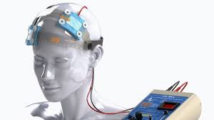

¿Qué es la estimulación eléctrica transcraneal?
La estimulación transcraneal por corriente directa (tDCS) es una técnica no invasiva que modula la actividad cerebral mediante una corriente eléctrica suave. Está diseñada para mejorar funciones cognitivas, disminuir síntomas depresivos y reducir la ansiedad, ayudando a restaurar el equilibrio neuronal en áreas específicas del cerebro.
¿Cómo se aplica en pacientes?
Durante el procedimiento, el paciente se sienta cómodamente mientras se colocan electrodos en su cuero cabelludo. A través de ellos, se administra una corriente de baja intensidad que dura entre 20 y 30 minutos. El proceso es seguro, indoloro y no requiere hospitalización.
Beneficios del tratamiento con tDCS
- Reducción comprobada de síntomas de depresión y ansiedad.
- Estimulación de la neuroplasticidad cerebral.
- Complementario a terapias psicológicas y farmacológicas.
- Ambulatorio, seguro y sin efectos secundarios graves.
- Resultados positivos desde las primeras sesiones.
Evidencia científica
Estudios clínicos han demostrado que la tDCS es eficaz para reducir los síntomas de trastornos afectivos. En pacientes con depresión resistente al tratamiento convencional, la tDCS ha mostrado mejoras significativas sin efectos colaterales importantes. Su uso es respaldado por investigaciones en neurociencia y psiquiatría.
Equipo Médico
Contamos con un equipo interdisciplinario conformado por psiquiatras, psicólogos, ingenieros biomédicos, neurólogos, neuropsicólogos y neuroterapeutas, todos altamente capacitados para ofrecer un tratamiento integral y profesional.